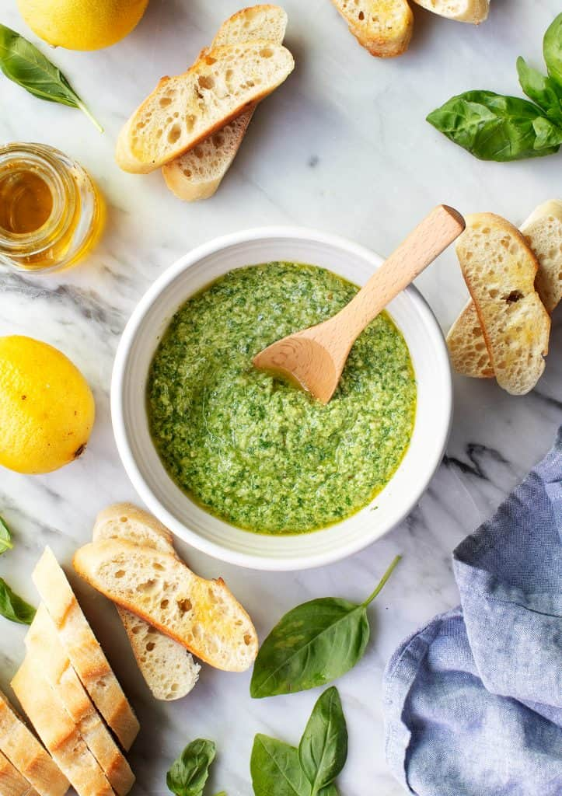

Pesto

Pesto is one of my favorite condiments to keep on hand. Try
these easy, fun pesto recipe variations to brighten pasta,
salads, roasted veggies & more!
One of my favorite things about summer is the bounty of fresh
herbs that are just outside my doorstep. Fresh herbs make any
meal instantly more flavorful and beautiful. My favorite thing
to do with all of those fresh herbs (aside from sprinkle them
on everything) is to make pesto! It’s especially great for lazy
summertime cooking. I like to dollop it on grilled vegetables,
pasta, spaghetti squash, salads, eggs, toasted bread, pizza,
sandwiches… you get the idea. With just a few easy steps, it
makes anything an instant tasty meal, whether you feel like
cooking or not.
Ingredients
- ½ cup toasted pine nuts
- 2 tablespoons fresh lemon juice
- 1 small garlic clove
- ¼ teaspoon sea salt
- freshly ground black pepper
- 2 cups basil leaves
- ¼ cup extra-virgin olive oil, plus more for a smoother
pesto
- ¼ cup freshly grated Parmesan cheese, optional
Instructions
- In a food processor, combine the pine nuts, lemon juice,
garlic, salt, and pepper and pulse until well chopped.
- Add the basil and pulse until combined.
- With the food processor running, drizzle in the olive
oil and pulse until combined. Add the Parmesan cheese,
if using, and pulse to briefly combine. For a smoother
pesto, add more olive oil.
Home